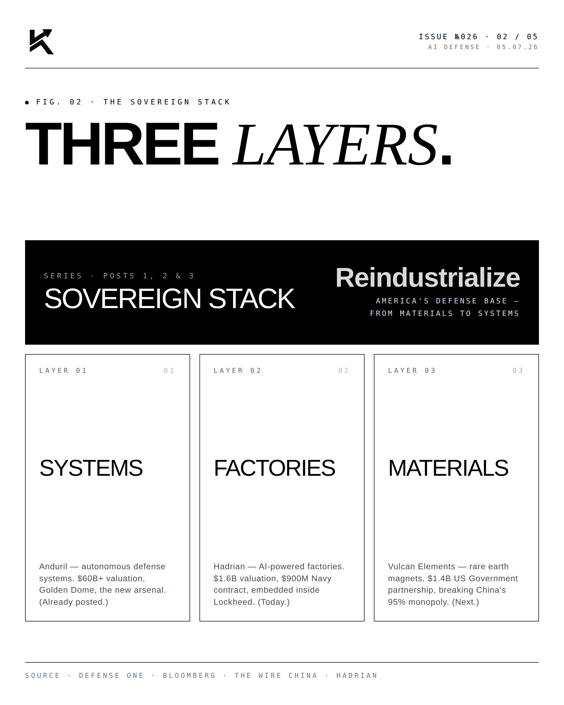
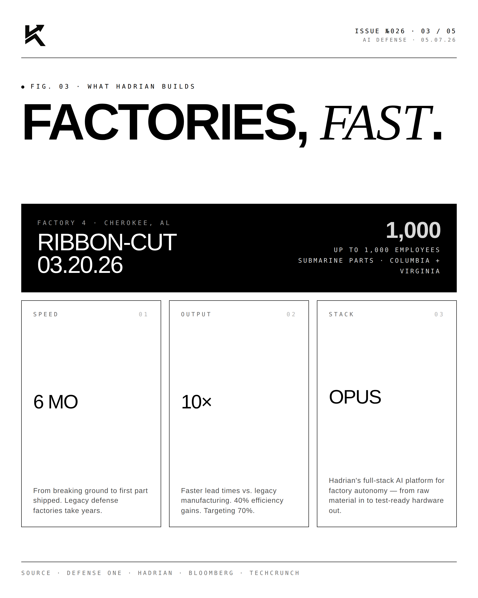
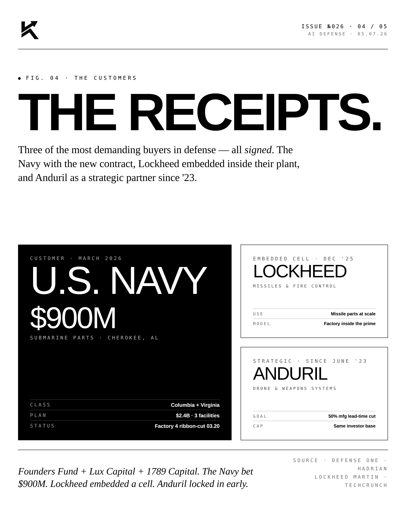
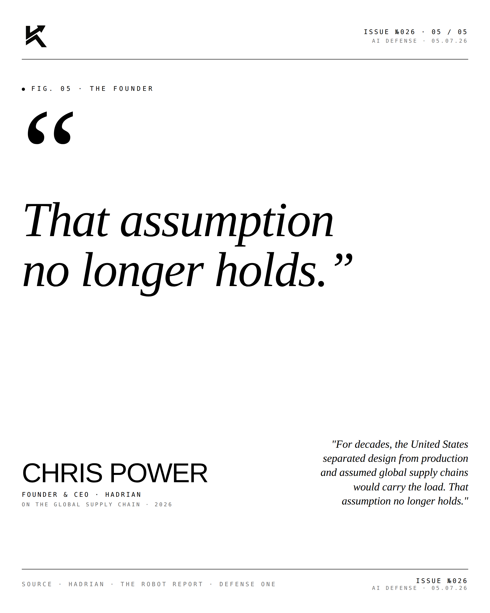

American Made.
America forgot how to make things. Hadrian is teaching it again. Software-defined factories producing aerospace-grade parts at the speed of code.

The Stack.
Hadrian is rebuilding the precision machining industry as a software business. The factory is software-defined — robots, CNC machines, and humans coordinated by Hadrian's OS layer. Aerospace-grade parts shipped in days instead of months.

The Partners.
Hadrian counts SpaceX, Lockheed, Anduril, Boeing among its customers. The same customers that drive the defense and space buildout are also driving the demand for U.S.-based precision parts manufacturing.
"Made in America,
at startup speed."CHRIS POWERFounder & CEO · Hadrian
"We're building the precision manufacturing infrastructure the United States needs to compete — software-first, vertically integrated, and fast."



America is learning to make things again. Hadrian is the textbook.
Disclosure
The author is a Limited Partner in 1789 Capital, which holds a position in Hadrian. Personal commentary and editorial analysis. Not investment advice, not an offer or solicitation.